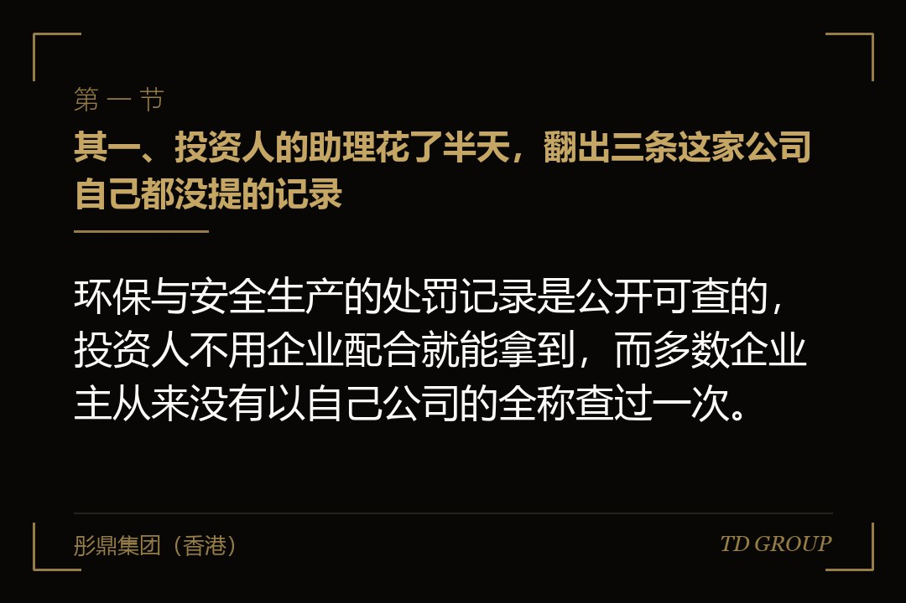
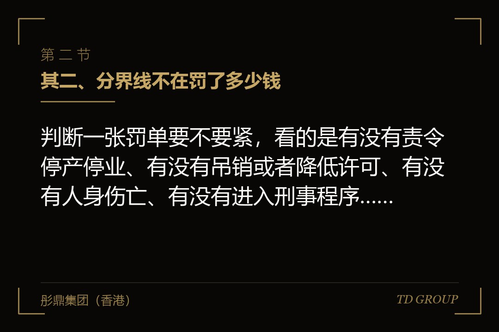
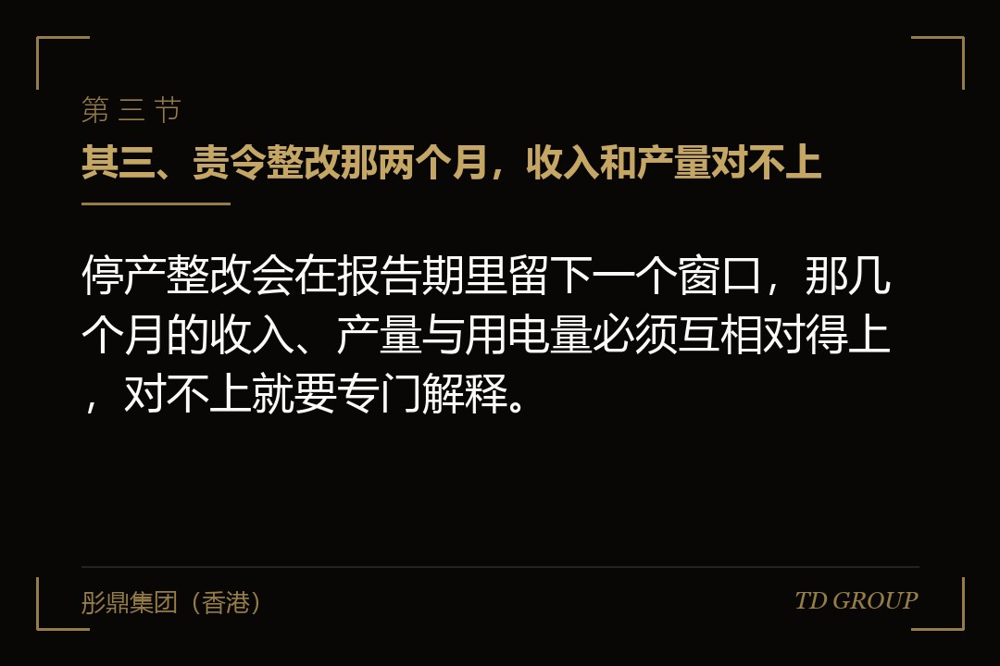

其一、投资人的助理花了半天，翻出三条这家公司自己都没提的记录

结论先行：环保与安全生产的处罚记录是公开可查的，投资人不用企业配合就能拿到，而多数企业主从来没有以自己公司的全称查过一次。
假设有家做金属表面处理的公司，年收入三亿多，给汽车零部件厂做配套，准备融一轮扩产。投资方的助理在正式进场之前先做了一件很便宜的事：把公司全称打进几个公开系统，看能查到什么。
半天之后清单出来了，三条。三年前一次废水在线监测数据超标的罚款；两年前一次危险废物管理台账记录不规范的罚款；去年一次因为安全生产设施未按规定组织验收，被责令限期整改。
创始人的反应很典型：「这些早就交完罚款了，整改也验收过了，那边都销案了。」这句话本身没说错，罚款确实交了，案也确实结了。麻烦在于，它回答的不是投资人真正在问的那个问题。
投资人要问的是三件事。交易文件里那句「公司不存在重大违法违规行为」还能不能原样签下去；如果这家公司后面要申报上市，这几条会不会被中介机构单独拉出来做专项核查；以及，被责令限期整改的那段时间，产线到底停没停，那几个月的收入怎么解释。
罚款是过去式，这三个问题是现在进行时。从那一刻起，谈的就不再是这家公司过去三年赚了多少，而是这些记录会把估值和条款拖走多少。
其二、分界线不在罚了多少钱

结论先行：判断一张罚单要不要紧，看的是有没有责令停产停业、有没有吊销或者降低许可、有没有人身伤亡、有没有进入刑事程序，金额只是表象。
企业主的直觉几乎都是按金额排序：罚五万的不算事，罚五十万的才叫事，罚过之后交了钱就算翻篇。投资人和中介机构的排序方式跟这个完全不同，他们甚至不太看金额那一栏，先看的是另外四处。
他们看的头一处是处罚的种类。同样是环保处罚，一笔单纯的罚款，和一份责令停产整治的决定书，分量差得很远——后者意味着这家公司在某一段时间里失去了合法生产的资格，而不只是多付了一笔钱。
第二处是情节的措辞。决定书上写的是「超标排放」，还是「通过暗管、渗井等逃避监管的方式排放」；是「台账记录不规范」，还是「未经许可处置危险废物」。这两组措辞在后续核查里会被归进完全不同的档。
第三处是有没有人身伤亡。安全生产领域，一起造成人员伤亡的事故，影响面远远超过罚款本身：它会同时启动事故调查与责任认定，并可能牵出对相关责任人的追究，而这条线上的当事人往往就是公司的高管。
第四处是有没有进入刑事程序。污染环境、重大责任事故这类罪名一旦被立案，性质就不再停留在行政层面，交易文件里那句陈述基本上没法原样保留。
所以一张只罚了两万、但写着「责令停产整治」的单子，在尽调里的分量可能远大于一张罚了三十万的普通超标罚单。至于各家中介机构具体怎么分档，口径并不完全一致，也会随监管规则调整，以主管机关正式规则文本为准。
其三、责令整改那两个月，收入和产量对不上

结论先行：停产整改会在报告期里留下一个窗口，那几个月的收入、产量与用电量必须互相对得上，对不上就要专门解释。
假设有家食品加工厂，前年因为生产环境卫生条件不符合要求被责令停产整改，实际停了两个多月。企业内部对这件事的记忆很淡：整改完了，证也保住了，年底一算利润还比上一年高。
而尽调看的是月度数据。那两个月的销售收入并没有归零，反而只比正常月份低了三成。产线停着，收入从哪里来？
企业方的解释可能完全是真的：停产前有备货，停产期间在发库存；或者是委托别家代工，货照样出。这两条路都走得通。
但两条解释各自会牵出新的核查。如果是发库存，停产前的存货数量、停产期间的发出与结转要能对得上；如果是委托代工，那份代工协议在不在、代工方有没有相应的生产许可、这笔成本记在哪个科目，都要拿得出来。
真正麻烦的是第三种情形：什么解释都没有，收入照记，产量照报，而那两个月的用电量和排污申报数据摆在那里，跟报表对不上。
到这一步，尽调翻的已经不是环保这一项了，而是收入的真实性。一张环保罚单，最后引出的是财务核查——这是很多企业主没预料到的传导路径。
其四、一次事故掀开的不止一条线
结论先行：安全生产事故会同时牵出用工形式、工伤保险与劳务派遣几条线，因为受伤的那个人首先要被确认「他到底是谁的员工」。
假设有家建材厂，两年前发生过一起高处坠落，工人重伤。事故本身按程序处理完了，罚款交了，赔偿也谈妥了，双方签了和解协议。
尽调进场之后，追问的方向却不是事故经过，而是那个人的身份。他跟谁签的劳动合同？有没有缴纳工伤保险？如果没有，赔偿的钱从哪个科目走的，有没有留下书面的和解文件？
如果他是通过劳务公司派来的，那家劳务公司有没有相应的经营许可，派遣人数占用工总量的比例是多少，赔偿责任在协议里怎么约定的，出事之后有没有实际执行？
如果他既没有劳动合同、也没有派遣协议，只是一个长期在厂里干活的临时人手，尽调就会顺着这个口子往下问：厂里这样的人还有多少，他们的工资从哪里发。
还有一条更安静的线是职业健康。噪声、粉尘、有机溶剂这类岗位，按规定要做职业病危害申报，岗前、在岗、离岗三个节点都要安排体检并保存档案。这件事平时没人问，而一旦有工人离职后主张职业病，缺失的体检记录就变成了企业无法自证的空白——尽调看到的不是罚单，是一个没有底的口子。
到这一步，一起事故已经变成了对整个用工结构的核查。社保与用工那条线另有专门的一笔账要算，不在这篇里展开。
要记住的只有一句：伤亡事故在尽调里从来不是一个孤立事件，它是一把撬棍，撬开的是这家公司平时不愿意打开的那一格。
其五、手续的历史欠账：先建后验、超出范围、租来的厂房
结论先行：环评、竣工验收、排污许可、消防这四道手续里，只要有一道当年是「先干起来再补」，尽调就会把它当成一个未了结的事项，哪怕从来没被罚过。
制造业扩产的常见节奏是：厂房先盖起来、设备先装上、订单接着做，手续在后面慢慢补。这在很多年里都不算什么，直到有人拿着清单逐项核对。
情形之一是环评与竣工验收脱节。项目做了环评，建成之后没有按规定完成竣工环境保护验收就投入生产。这在核查里是一个明确的瑕疵，即便主管部门当年并没有过问。
情形之二是排污许可证载明的范围与实际不符。证上写的是某几类污染物、某个排放口、某个产能规模，而实际生产早就超出了这个范围。这不是「多做了一点」，性质上更接近未取得许可就排放。
情形之三是租来的厂房。生产用房是租的，消防验收手续在业主名下；租户进场后做了隔断、加了夹层、改了平面布局，而这些改动从来没有重新办过消防手续。真出事时责任落在谁头上，租赁合同里那句「由承租方自行负责」未必挡得住。
这三种情形有个共同点：它们不一定已经变成罚单。尽调查的是「有没有可能变成罚单」，而这个判断不需要等主管部门先动手——投资人不会替企业赌这个时间差。
顺带说一句，处罚有时会往回咬住资质本身：情节重的可能影响某张许可证或者资质等级的存续。资质那条线另有专门的讲法，这里只提示它跟处罚是连着的。
其六、处罚跟着谁走，以及它自己的保质期
结论先行：行政处罚跟着被处罚的那个法人主体走，不跟着厂房和设备走，所以重组、分立、迁址都不会让它自动消失。
企业方常有一个误解：把出过事的那家公司注销掉，或者干脆停掉不用，把设备、人和订单一起挪到新主体名下，那些记录就跟着旧执照一起翻篇了。这个想法在生产端听起来很自然——机器还是那批机器，活还是那些活，只是换了个名字签合同。
实际情况要复杂得多。处罚记录记在原主体名下，而在合并、分立这类情形中，相关的权利义务通常由承继的一方承受；具体怎么承继，要看重组的方式和主管机关的认定，不是企业单方面说了算。
更实际的一层是：投资人做核查时看的是「这套生产经营体系的历史」，不是「这张营业执照的年龄」。同一批人、同一个厂区、同一条产线，换了个执照名字，尽调里照样会被问到，而且问得更细。
至于时点，行政处罚信息在公示系统里有它的公示期限，超过期限之后不再对外展示。但不再展示不等于不存在——中介机构还可以通过其他途径了解到，交易对手也可以直接要求企业书面确认。
而在申报上市这个场景里，报告期内不得存在重大违法违规行为是一项明确要求，具体年限口径与「重大」的认定标准，以监管机构正式规则文本为准。这意味着同一张单子，落在报告期的哪一段，结果可能完全不同。
所以处罚记录确实有「保质期」，只是那个期限按监管规则算、按报告期算，不按企业自己的记忆算。企业觉得早就过去了的事，在规则的时间轴上可能还在窗口里；反过来也一样，有些看着挺吓人的旧记录，其实已经离得足够远，只要证据齐全就不至于挡路。
其七、「已经整改完了」不是一句话，是一叠文件
结论先行：证明整改到位靠的是整改验收意见、复产文件与整改之后的监测记录，只有一张罚款缴款凭证远远不够。
多数企业主被问到整改情况时，能拿出来的就是缴款凭证。而缴款只证明了一件事：罚款交了。它不能证明被罚的那个问题已经不存在。
一份站得住的整改材料通常有四样：处罚决定书本身；整改方案与整改完成报告；主管部门出具的验收意见或者同意复产的文件；以及整改之后一段时间的监测或者检查记录。
第四样最容易被忽略，偏偏它是说服力最靠得住的一样。超标排放整改之后，连续若干期的在线监测数据都落在限值内，这比任何书面说明都管用，因为它是第三方留下的数据，不是企业自己写的一段话。
反过来，最难解释的是「悄悄改了但没留任何记录」。设备换了、工艺改了、隔断拆了，一份文件都没有——尽调只能得出一个结论：无法验证。而无法验证在交易文件里的处理方式，跟「确实有问题」是接近的。
我们跟华尔街俱乐部有合作，这两年经手的制造业案子里，卡在这一格上的比卡在利润规模上的更多——多数不是问题本身有多严重，而是当年没人想到要把整改过程留下来。
所以整改留痕是加分不是减分。一家主动清理过并且留下完整记录的企业，在投资人眼里的可信度，高于一家嘴上说「从来没被罚过」却什么都拿不出来的企业。
其八、投资人怎么把它折算成钱，以及你今天下午能做的那件事
结论先行：处罚记录在融资里很少导致当场否决，它通常被折算成估值扣减、一条专项赔偿安排，或者一笔先不付的价款。
处理方式之一是把它当成或有负债估个数。可能的后续处罚、整改支出、停产损失，尽调会给一个区间，而这个区间会直接从投前估值里扣掉。
处理方式之二是写进陈述与保证。交易文件里通常有一句关于不存在重大违法违规的陈述，历史上有处罚记录的，要么在披露文件里逐条列明，要么就得在这句话上做例外安排；对应的赔偿责任怎么落，属于另一套条款的事。
处理方式之三是把一部分价款留住，约定在若干个月内不付，等到确认没有后续处罚、或者整改验收完成之后再释放。这条对企业方未必吃亏——它至少让交易做成了。
处理方式之四是等。如果关键的那张单子马上就要走出被关注的窗口期，把节奏往后推几个月，有时候比在桌上争论更划算。
至于今天下午能做的事，只有一件：以公司的工商全称，把自己在几个公开系统里的记录查一遍。企业信用信息公示系统里的行政处罚栏、信用中国上的处罚与失信记录、生态环境部门与应急管理部门各自公开的处罚决定，加起来半天翻得完。
然后对着查出来的每一条回答四个问题：有没有责令停产停业，有没有人身伤亡，有没有影响到某张许可证或者资质的存续，整改的证据在不在手上。
四个问题都答得上来的，这件事到此为止；有一个答不上来，它就会在下一次融资的桌上被人重新念一遍，而那时候解释的时间和主动权，都不在企业这边了。
因此，环保与安全生产处罚在融资里的分量，从来不取决于当年罚了多少钱，而取决于今天还能不能把它讲清楚。